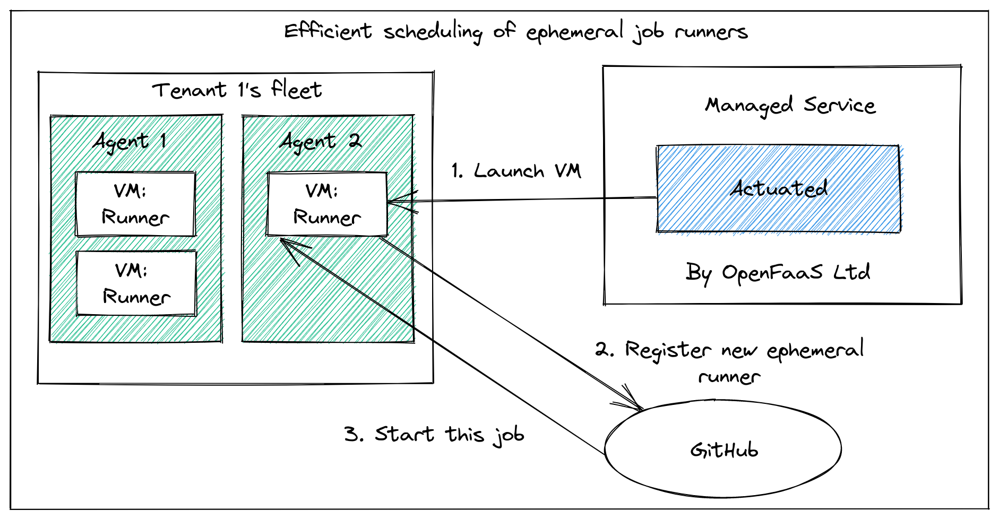

actuated¶
Actuated brings blazingly fast, secure builds to self-hosted CI runners.
Building containers on self-hosted runners is slow and insecure¶
Most solutions that use containers for running Docker or Kubernetes in CI have very poor security boundaries. They require either privileged containers (root on the host), a shared Docker socket (root on the host), third-party tools which don't integrate well and still require root to mount folders, or user namespaces which come with their own limitations. The chances are, if you use Docker or K8s in your CI, and run with: actions-runner-controller, Jenkins, or GitLab, then you may be compromising on security or user experience.
Management is a nightmare¶
Self-hosted CI runners are continually out of date, and require fine-tuning to get all the right packages in place and Kernel modules to build containers and cloud-native software. You'll also have to spend extra time making sure builds don't conflict, and that they can't cause side effects to system-level packages. What if you need two different version of some software?
If you haven't felt this pain yet, then perhaps you're blissfully unaware or are not updating your packages?
Are you running privileged containers for CI in your organisation? Are you sharing a Docker Socket (just as bad!)? Are you running Docker in Docker (DIND)? 🙈
Self-managed runners are inefficient and overprovisioned¶
Self-hosted runners are typically over-provisioned meaning you're spending too much money.
Why are they over-provisioned? Because you never know how many jobs you'll have to run, so you have to make them bigger, or have too many hosts available.
Why are they inefficient?
By default, the self-hosted runner will only schedule one job per host at a time, because GitHub has no knowledge of the capacity of your machines. So each and every build you run could consume all the resources on the host. The second reason is that builds often conflict with one another causing side effects that only happen in CI and are really difficult to track down and reproduce.
Actuated uses VMs to slice up the whole machine, and can run many builds in parallel. The net effect is that your build queue will get cleared down much more quickly.
Hands-free, VM-level isolation¶
Actuated provides a fast-booting microVM which can run Docker, Kubernetes and anything else you need, with full root on the VM, and no access to the host. Each environment is created just in time to take a build, and is removed immediately after.
Boot time is usually ~1-2 seconds for the VM, that extra second is because we start Docker as part of the boot-up process.
What does "actuated" mean?
Something that activates or impels itself; specifically (a machine, device, etc.) that causes itself to begin operating automatically, self-activating.
We maintain a VM image that is updated regularly through an automated build, so you don't have to install SDKs, runtimes or language packs on your build machines.
Just enable automated updates on your server then install the actuated agent. We'll do the rest including managing efficient allocation across your fleet of servers, and updating the CI image.
And actuated will run your jobs efficiently across a fleet of hosts, or a single machine. They each need to be either bare-metal hosts (think: AWS Metal / Graviton, on-premises, etc), or support nested virtualization (a feature available on GCP and DigitalOcean)
What people are saying¶
-
"We've been piloting Actuated recently. It only took 30s create 5x isolated VMs, run the jobs and tear them down again inside our on-prem environment (no Docker socket mounting shenanigans)! Pretty impressive stuff."
-
"This is great, perfect for jobs that take forever on normal GitHub runners. I love what Alex is doing here."
-
"Thank you. I think actuated is amazing."
Alan Sill, NSF Cloud and Autonomic Computing (CAC) Industry-University Cooperative Research Center
-
"Nice work, security aspects alone with shared/stale envs on self-hosted runners."
-
"Is there a way to pay github for runners that suck less?"
-
"Excited to try out actuated! We use custom actions runners and I think there's something here 🔥"
-
It is awesome to see the work of Alex Ellis with Firecracker VMs. They are provisioning and running GitHub Actions in isolated VMs in seconds (vs minutes)."
-
"This is awesome!" (After reducing Parca build time from 33.5 minutes to 1 minute 26s)
Watch a live demo¶
Alex shows you how actuated uses an isolated, immutable microVM to run K3s inside of a GitHub Action, followed by a matrix build that causes 5 VMs to be launched. You'll see how quick and easy it is to enable actuated, and how it can buffer and queue up jobs, when there's no remaining capacity in your fleet of agents.
You can also watch a webinar that Alex recorded with Richard Case from Weaveworks on how microVMs compare to containers and legacy VMs, you'll see Alex's demo at: 1:13:19.
Conceptual overview¶

Actuated will schedule builds across your fleet of agents, packing them in densely, without overloading the host. Each microVM will run just one build before being destroyed to ensure a clean, isolated build.
Learn more in the FAQ
Get started¶
- Start a subscription or book a call to find out more
- Read the FAQ
- Enable actuated for an existing repository
- Read more in the announcement: Blazing fast CI with MicroVMs
Comparison¶
Feel free to book a call with us if you'd like to understand this comparison in more detail.
| Solution | Isolated VM | Speed | Efficient spread of jobs | Safely build public repos? | 64-bit Arm support | Maintenance required | Cost |
|---|---|---|---|---|---|---|---|
| actuated.com | Bare-metal | Yes | Very little | Fixed monthly cost | |||
| Hosted runners | Poor | None | Free minutes in plan * |
Per build minute | |||
| Standard self-hosted runners | Good | DIY | Manual setup and updates | OSS plus management costs | |||
| actions-runtime-controller | Varies * |
DIY | Very involved | OSS plus management costs |
1actions-runtime-controller requires use of separate build tools such as Kaniko, which break the developer experience of usingdockerordocker-compose. If Docker in Docker (DinD) is used, then there is a severe performance penalty and security risk.
2Builds on public GitHub repositories are free with the standard hosted runners, however private repositories require billing information, after the initial included minutes are consumed.
You can only get VM-level isolation from either GitHub hosted runners or Actuated. Standard self-hosted runners have no isolation between builds and actions-runtime-controller requires either a Docker socket to be mounted or Docker In Docker (a privileged container) to build and run containers.
Got questions, comments or suggestions?¶
actuated is trademark of OpenFaaS Ltd.
You can contact the team working on actuated via email at: contact@openfaas.com
Follow @selfactuated on Twitter for updates and announcements